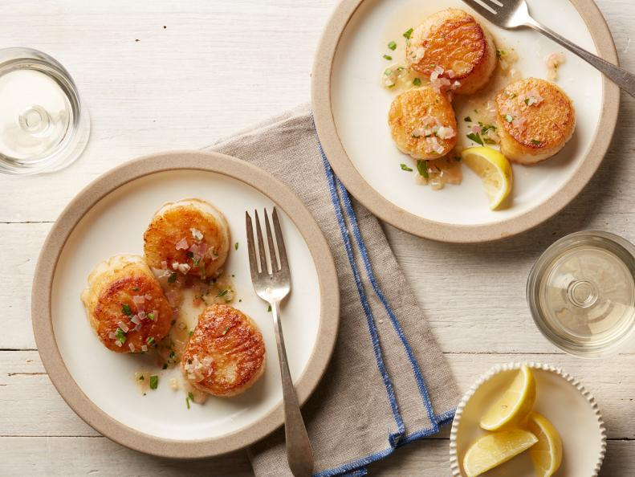

Scallops Provencal

A plateful of buttery scallops proves seasoning and lemon juice are enough to elevate any meal.
Ingredients
- 1 pound fresh bay or sea scallops
- Kosher salt and freshly ground black pepper
- All-purpose flour, for dredging
- 4 tablespoons (1/2 stick) unsalted butter, divided
- 1/2 cup chopped shallots (2 large)
- 1 garlic clove, minced
- 1/4 cup chopped fresh flat-leaf parsley leaves
- 1/3 cup dry white wine
- 1 lemon, cut in 1/2
- If you're using bay scallops, keep them whole. If you're using sea scallops, cut each 1 in half horizontally. Sprinkle with salt and pepper, toss with flour, and shake off the excess.
- In a very large saute pan, heat 2 tablespoons of the butter over high heat until sizzling and add the scallops in 1 layer. Lower the heat to medium and allow the scallops to brown lightly on 1 side without moving them, then turn and brown lightly on the other side. This should take 3 to 4 minutes, total. Melt the rest of the butter in the pan with the scallops, then add the shallots, garlic, and parsley and saute for 2 more minutes, tossing the seasonings with the scallops. Add the wine, cook for 1 minute, and taste for seasoning. Serve hot with a squeeze of lemon juice.
Return to homepage.